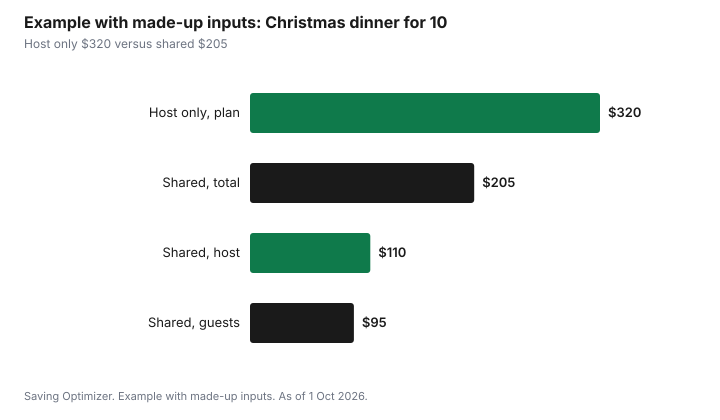

Events · Canada
Hosting Christmas Dinner on a Budget in Canada
Hosting Christmas dinner in Canada on a budget comes down to four choices: a firm headcount, one main dish sized to that headcount, sides shared among guests, and a make-ahead timeline so nothing is bought at the last minute. Christmas 2026 falls on Friday 25 December, and most grocery stores are closed that day, so the shopping must be done by Christmas Eve. Turkey Farmers of Canada suggests about 450 g of whole turkey per person, or 700 g with leftovers. Health Canada's safe internal temperatures are 82°C for a whole bird and 71°C for fresh pork, including ham.
Key takeaways
- Christmas 2026 is Friday 25 December. Finish shopping by Wednesday 23 or Thursday 24 December; most stores close on Christmas Day.
- Pick one main: turkey at about 450 g per person (700 g with leftovers), a bone-in breast for a small table, or a ham.
- Health Canada: whole poultry 82°C, poultry pieces and stuffing 74°C, fresh pork including ham 71°C, leftovers reheated to 74°C.
- A frozen turkey thaws in the fridge at about 24 hours per 2.5 kg. A 7 kg bird needs three days.
- Share the sides and desserts with a sign-up list; keep the main, gravy and the oven schedule with the host.
- Example with made-up inputs: a 10-person dinner planned at $320 lands at $205.
Headcount and the main dish
Ask for replies by mid-December. With Christmas on a Friday, many families gather on Christmas Eve, Christmas Day or the weekend after, and some guests will come to more than one meal. A firm count stops you from buying for 14 and serving 9.
Choose one main. A whole turkey is traditional and often well priced in December. For a small table, a bone-in turkey breast, a roast chicken or two, or a ham may cost less and be easier. Some families now serve a vegetarian main for everyone, which can lower the cost and simplifies dietary needs. Two mains for one dinner almost always costs more than one.
| Adults | No leftovers | With leftovers |
|---|---|---|
| 4 | About 1.8 kg | About 2.8 kg |
| 6 | About 2.7 kg | About 4.2 kg |
| 8 | About 3.6 kg | About 5.6 kg |
| 10 | About 4.5 kg | About 7.0 kg |
| 12 | About 5.4 kg | About 8.4 kg |
Compare by price per kilogram, not by sticker price. December flyers often feature frozen turkeys at a lower price per kilogram than fresh ones, and some stores tie a low turkey price to a minimum purchase. Count the minimum purchase as part of the price. If you are cooking ham, read the label: some hams are fully cooked and only need reheating, and others are fresh or partly cooked and must be cooked to a safe temperature.
Thawing and cooking safely
Health Canada advises thawing a turkey in the refrigerator, in its original wrapping on a tray, for about 24 hours for every 2.5 kg. Its thawing table runs from about 24 hours for a 2.27 kg bird to about 72 hours for a 6.8 kg bird. For a Friday dinner, a 7 kg turkey goes into the fridge by Monday night or Tuesday morning. A full fridge in December can make that hard, so clear a shelf the weekend before.
| Item | Health Canada guidance |
|---|---|
| Whole turkey or chicken | Cook to 82°C |
| Poultry pieces and stuffing | Cook to 74°C |
| Fresh pork, including ham | Cook to 71°C |
| Gravy | Bring to a rolling boil |
| Leftovers | Refrigerate within 2 hours; eat within 2 to 3 days; reheat to 74°C |
Use a digital food thermometer in the thickest part of the meat, not touching bone. Health Canada recommends cooking stuffing in a separate dish, which also frees the bird to cook faster and more evenly. A thermometer is cheap insurance against both undercooking and overcooking.
The potluck split
Sides and desserts often cost as much as the main. Share them. The host keeps the main, the gravy and the oven schedule, because only one oven is available and the main needs most of it. Guests take dishes that travel well or need only a short reheat: salads, roasted vegetables that can be reheated, rolls, cranberry sauce, and desserts.
| Category | Who | Quantity | Oven time needed |
|---|---|---|---|
| Main, gravy, stuffing | Host | For the headcount | Most of the day |
| Potatoes | Guest 1 | For the headcount | Short reheat or stovetop |
| Vegetables | Guest 2 | Two dishes | Short reheat |
| Salad and rolls | Guest 3 | For the headcount | None |
| Dessert | Guest 4 | Two desserts | None |
| Drinks and containers | Non-cooking guests | Enough for the table | None |
Some families prefer to split the bill instead. The host shops for everything and shares the receipt, and each household sends an equal share. This keeps the menu under one cook's control and makes the cost fair, as long as the receipt is shared.
Groceries and prices in December
Statistics Canada reported that prices for food purchased from stores rose 2.8% in the year to August 2026, down from 3.1% in July and below headline inflation of 3.0%. That still means a Christmas dinner will likely cost more than last year's for the same menu. Build the list from the menu, subtract what is in the pantry, and compare store brands for ingredients that are not tasted on their own, such as broth, flour, butter and cream.
Buy shelf-stable items early in December when they are on sale, and leave perishables for the last few days. Vegetables such as potatoes, carrots, onions and squash keep well and are often cheapest in winter. Fresh herbs, cream and salad greens should be bought two or three days before.
A make-ahead timeline
| When | What to do |
|---|---|
| By 15 December | Fix the headcount and send the sign-up list |
| Weekend of 19 and 20 December | Buy a frozen turkey and shelf-stable items; clear a fridge shelf |
| Monday 21 or Tuesday 22 December | Move a large turkey to the fridge to thaw |
| Wednesday 23 December | Buy perishables; make cranberry sauce and dessert |
| Thursday 24 December | Prepare vegetables, stuffing and table; buy last items before stores close early |
| Friday 25 December | Cook to temperature; set out leftover containers before serving |
| Within 2 hours of serving | Refrigerate leftovers |
Leftovers: plan them before dinner
Leftovers are where a larger bird or ham pays off, but only if they are eaten. Health Canada's holiday page says to refrigerate leftovers within two hours and eat them within two to three days, reheating to 74°C and not more than once. Store turkey separately from stuffing and gravy, in shallow containers. Freeze anything you will not eat within that window. Send guests home with containers. Boil the turkey carcass or ham bone for stock to make soup for the week between Christmas and New Year's.
Example with made-up inputs: dinner for 10
These numbers are an example with made-up inputs. They are not store prices. A host plans Christmas dinner for 10 adults and first prices it as a host-only dinner: $110 for a large turkey and a ham, $110 for sides, $50 for desserts and $50 for drinks, for $320.
The host drops the ham and buys a turkey sized for 10 with leftovers at $72. Stuffing, gravy and rolls cost $38. Three guest households take potatoes, vegetables and dessert, costing them $60 in total, and a fourth brings drinks for $35. The dinner's total is $205, and the host's share is $110.
| Line | Host only | Shared |
|---|---|---|
| Main | $110 (turkey and ham) | $72 (turkey) |
| Stuffing, gravy, rolls | Included in sides | $38 |
| Sides | $110 | $35 (guests) |
| Desserts | $50 | $25 (guests) |
| Drinks | $50 | $35 (guests) |
| Total | $320 | $205 |

Common mistakes
- Serving two mains when one would do.
- Buying the turkey too late to thaw in the fridge.
- Leaving shopping to Christmas Eve afternoon, when stores close early and shelves are thin.
- Assigning guests dishes that need oven time on the day.
- Leaving leftovers on the table past two hours.
- Skipping a thermometer.
The Thanksgiving dinner guide uses the same method, so this year's October receipt is a good reference. Food is one line in the December spending plan.
Sources
- Turkey Farmers of Canada, Buying a Whole Turkey and Whole Turkey Calculator, canadianturkey.ca, as of 1 Oct 2026. About 450 g per person, or 700 g with leftovers.
- Health Canada, Safe internal cooking temperatures, canada.ca, as of 1 Oct 2026. Whole poultry 82°C; pieces and stuffing 74°C; fresh pork including ham 71°C; leftovers 74°C.
- Health Canada, Holiday food safety and Poultry safety, canada.ca, as of 1 Oct 2026. Fridge thawing about 24 hours per 2.5 kg; stuffing separately; gravy to a rolling boil; leftovers within 2 hours and eaten within 2 to 3 days.
- Statistics Canada, Consumer Price Index, August 2026, The Daily, 14 Sep 2026. Food from stores +2.8% year over year; all-items +3.0%.
- Calendar: Christmas Day is Friday 25 December 2026.
- The 10-person dinner, the $320 and $205 totals and every amount in the example table and chart are an example with made-up inputs.
Frequently asked questions
How much turkey do I need for Christmas dinner?
Turkey Farmers of Canada suggests about 450 g of whole turkey per person, or about 700 g per person if you want leftovers. For 10 adults that is about 4.5 kg without leftovers or 7 kg with them.
What temperature should ham be cooked to in Canada?
Health Canada's safe internal temperature for fresh pork, including ham, is 71°C. Some hams are sold fully cooked and only need reheating; read the label. Reheat leftovers to 74°C.
When should I take the turkey out of the freezer for Christmas?
Health Canada advises thawing in the fridge for about 24 hours per 2.5 kg. For dinner on Friday 25 December 2026, move a 7 kg turkey to the fridge by Monday 21 or Tuesday 22 December.
Are grocery stores open on Christmas Day in Canada?
Most grocery stores are closed on Christmas Day and many close early on Christmas Eve. Plan to finish shopping by Wednesday 23 or Thursday 24 December 2026.
How can I host Christmas dinner for less?
Fix the headcount, choose one main sized to it, share sides and desserts with a sign-up list, buy shelf-stable items early, and plan leftovers so the main feeds the week after.
Researched and drafted with AI assistance and fact-checked against official Canadian sources. How we create content.
Disclosure: Saving Optimizer may earn a commission if a partner link is added later. No partnership is claimed on this page, and no store, brand or product is ranked. Education only. Follow Health Canada's food safety guidance and product labels.